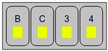
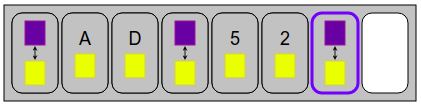
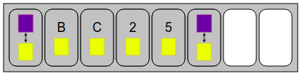
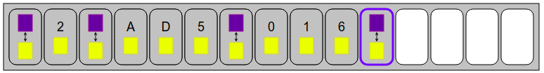
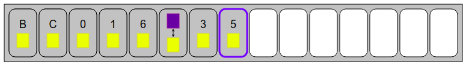

Turn on the building lights as in the objective figure. To do this, drag the grey cards into the white boxes to form a sequence of instructions, then run it.
Each card except the last turns on all lights in a row or column.
The last card allows you to invert all the boxes.
To reproduce the pattern, it was necessary to turn on the columns B and C, as well as the lines 3 and 4. The order did not matter. So we could write the following program :

Initially, all the lights are already on. The only card that can have an effect is the last one. So we start with it to extinguish everything.
Then there are two possible strategies.
(1) We turn on all the boxes that are lighted in the objective figure, then turn off the ones we lighted too.
We start by turning on the columns A and D. We must then turn off the lines 5 and 2. For this, we reverse everything, we turn on the lines 5 and 2, then we reverse everything again.

(2) We turn on all the boxes that are off in the objective figure, then we turn all the lights.
There are many possible solutions.
A first solution consists of the following steps:

Below is the shortest solution.
In this topic, each box of the building is on or off. Similarly, a computer's memory consists of bits whose value is either 0 or 1 . All numbers, all images, all texts, and all programs are described only with bits, that is, with long sequences of 0 and 1 .
At the heart of the computer is a processor that is able to handle bit packets, typically 64 bits, very efficiently. For example, the processor has a "reverse all bits" operation, which takes a 64-bit packet, and a fraction of a second, replaces all 0 with 1 and all 1 with 0 . A computer can perform more than two billion such operations on 64-bit packets in one second, manipulating over 100 billion bits in a single second !